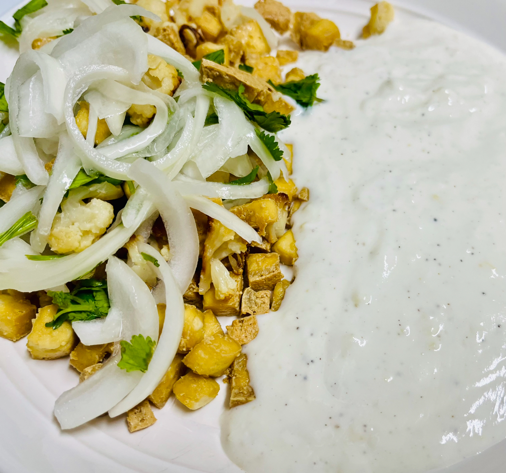

Tofu-Cauliflower-Ginger-Yogurt Recipe

Description
Tofu-Cauliflower-Ginger-Yogurt is a vegetarian dish. I learned this recipe when I was in Taiwan.
Ingredients
- cauliflower, cut into 1-inch florets
- firm tofu, cut into cube of 3/4-inch sides
- yogurt
- ginger, chopped finely
- onion, sliced about 1/3-inch thick
- olive oil
- black pepper
- salt
- coriander leaves
Steps
- cauliflower florets with olive oil and salt
- roast cauliflower in oven (475 degree Fahrenheit) for about 20 minutes
- after cauliflower are done, roast tofu in the same way (personally, I prefer to saute tofu in oil over medium heat for about 10 minutes)
- put onion slices in a bowl and season with salt; set aside for 10-15 minutes, and drain any liquid afterwards
- mix yogurt and finely chopped ginger in a bowl and season with black pepper and salt
- put cauliflower, tofu, and onion in a plate and sprinkle coriander leaves; serve with ginger-yogurt